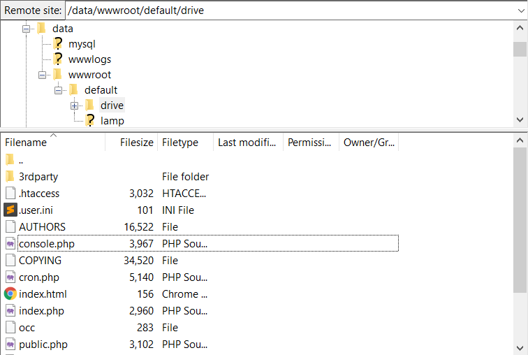
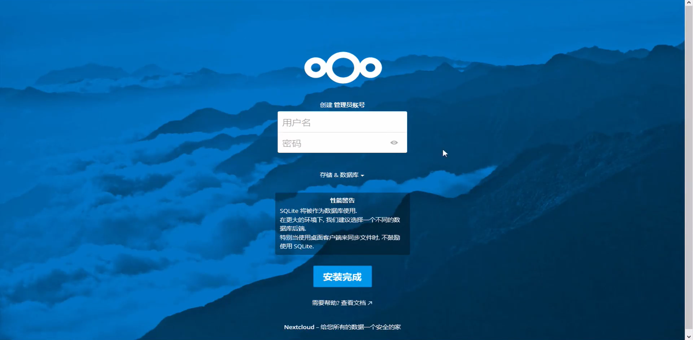

课程链接：【新手玩转云计算】打造个人专属网盘
运行环境
ECS云服务器：选用**LAMP环境(Ubuntu16.04 Apache PHP7.1)**或以上版本的镜像。（以下实验使用LAMP环境(Ubuntu18.04 Apache PHP7.2)。）
本地：FileZilla SFTP文件传输工具、PuTTY SSH连接终端。
安装NextCloud网盘程序
下载地址：https://download.nextcloud.com/server/releases/latest.zip
解压下载文档后把内容复制到data/wwwroot/default/或其子目录下。

在PuTTY中运行
sed -i 's/;mbstring.func_overload = 0/mbstring.func_overload = 0/g' /usr/local/php/etc/php.ini |
用浏览器打开公网IP，显示Nextcloud初始页面

自由创建管理员账号 > 安装完成，安装步骤结束。